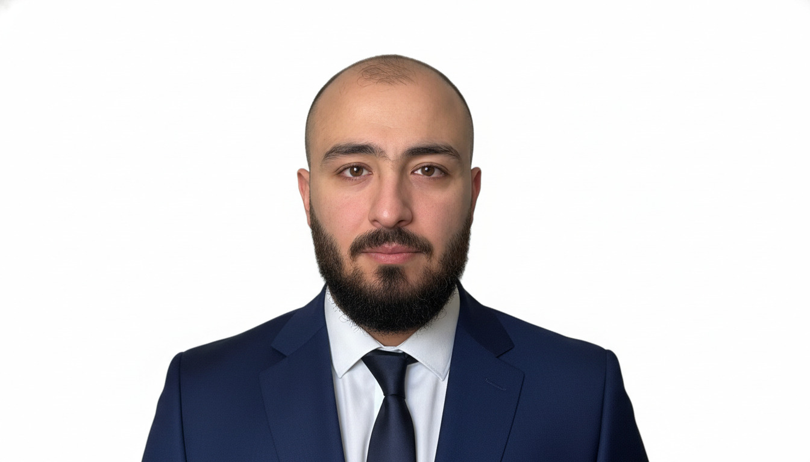

اكتسبت خبرة واسعة في جميع المجالات التي عملت بها، متميز بسعة التعلم السريع، والقدرة العالية على العمل الجماعي بفاعلية ضمن الفريق وتحمل ضغوط العمل المختلفة. أتطلع للانضمام إلى بيئة عمل احترافية لمشاركة خبراتي وتوظيف مهاراتي لتطوير بيئة العمل وتحقيق الأهداف المشتركة.
Gained extensive experience across all fields of work, highly adaptable and quick learner. Proven ability to work effectively within teams and handle workplace pressure efficiently. Seeking to join a professional work environment where I can contribute my skills, share my expertise, and support operational growth.